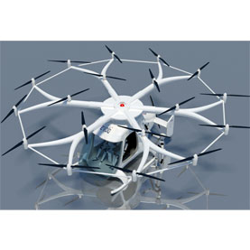
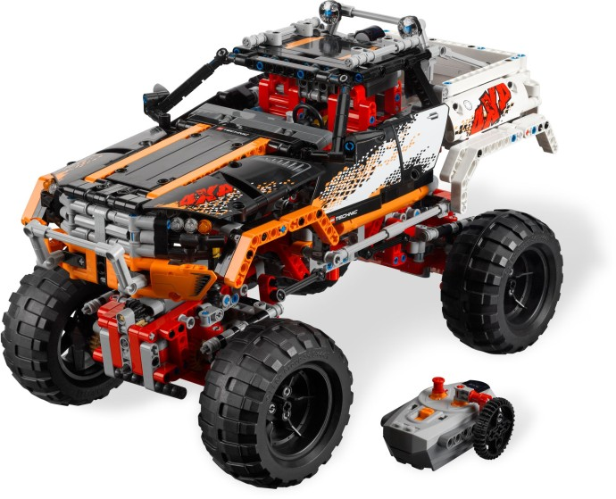
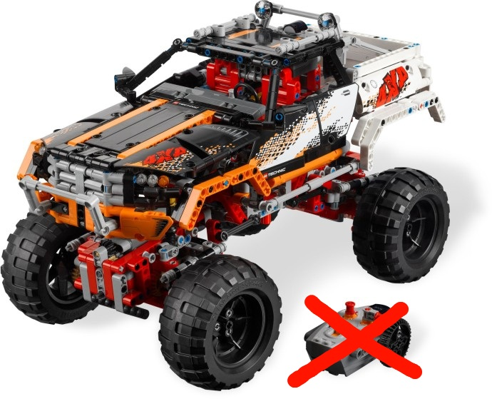
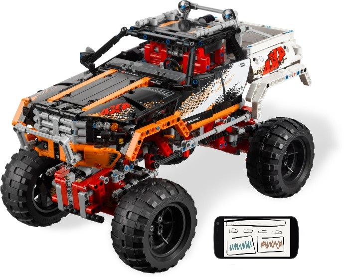
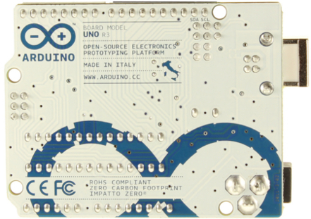
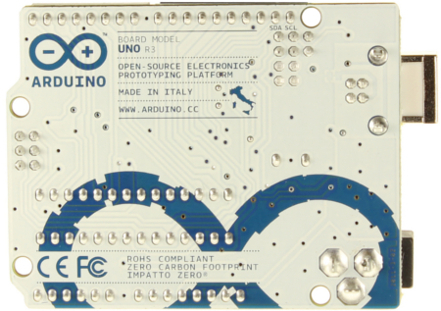
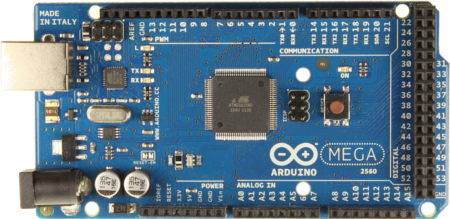
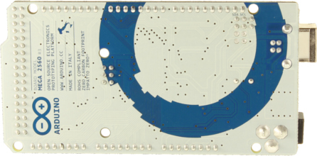
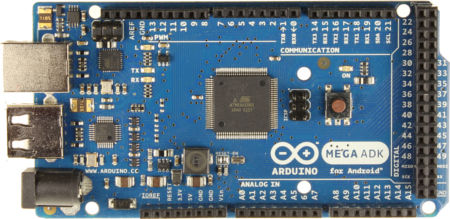
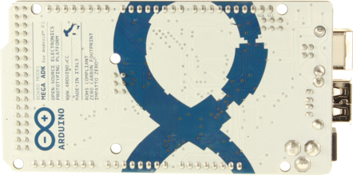

ADK and Arduino
Using the ADK (Accessory Development Kit) and Arduino to do awesome things
aka: androdino
Who is this?
Cause I had to
- Web Developer since Miss December 1994
- Barely got an Electrical Engineering degree
- Google I/O is sorta my thing
What is Arduino?
Arduino is an open-source electronics prototyping platform based on flexible, easy-to-use hardware and software. It's intended for artists, designers, hobbyists, and anyone interested in creating interactive objects or environments.
What is ADK?
The Accessory Development Kit (ADK) is a reference implementation for hardware manufacturers and hobbyists to use as a starting point for building accessories for Android.
What is awesome?
What is awesome?
What is awesome?
What is awesome?
More on Arduino
Official Arduino
 

Arduino MEGA
 Arduino MEGA ADK
 The Clones
Plus dozens of others!
Official ADK's
Other ADK "ready" hardware
Shields! Activate!
Hardware details
- Arduino
- Motor Shield
- Bluetooth Shield
Hardware Software Details
Picture of Arduino IDE here.
Android details
Psy
Global State
Set data-state="something" on a slide and "something"
will be added as a class to the document element when the slide is open. This lets you
apply broader style changes, like switching the background.
"blackout"
"soothe"
Challenges
- RX to TX and TX to RX??
- Software Serial on Mega/ADK
- SoftwareSerial library (or any other normal library) not in ADK 2012 custom IDE
- Lego batter pack is 9V. L298d chip on motor shield is inefficient
Other options?
i.e. Why didn't you use?
Javascript?
i.e. Why didn't you use?
Resources
- Arduino Books
- Sariel's book
Where did you get all that stuff?
Vendors
AmazonMaker Shed
Sparkfun
Adafruit
itead
Lego
Questions
electronics stackexchangebricks stackexchange